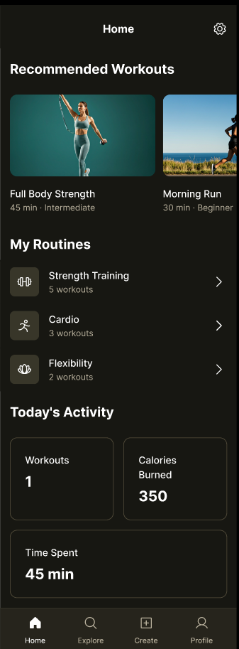

JNOB FIT es un motor de entrenamiento donde tú defines ejercicios, series y métricas. Hoy optimizado para gimnasio; diseñado para crecer a más deportes.

Herramientas reales para planificar, ejecutar y registrar tu entrenamiento de gimnasio.
Crea rutinas con ejercicios, series, orden por días y descansos entre ejercicios.
Configura peso, repeticiones, tiempo y unidades según cada ejercicio.
Registra sets durante la sesión con una interfaz pensada para el gimnasio.
Contadores automáticos entre series para mantener el ritmo de tu entreno.
Consulta sesiones anteriores y revisa lo que hiciste en cada entrenamiento.
Entrena sin conexión. Tus datos se sincronizan cuando vuelves a tener red.
Define ejercicios, parámetros y series. Organiza los días de la semana a tu gusto.
Ejecuta la sesión, marca cada set y deja que los timers de descanso te guíen.
Consulta sesiones pasadas y sigue construyendo sobre lo que ya hiciste.
Transparencia sobre lo que ya funciona y lo que estamos construyendo.
Instala la beta directamente en tu Android. Gratis durante el periodo de pruebas.
En Android 10+: Ajustes → Aplicaciones → Acceso especial → Instalar apps desconocidas.
Cargando novedades…
Te da control sobre rutinas y parámetros en lugar de seguir plantillas genéricas. Es un motor de entrenamiento personalizable, no una app de rutinas cerradas.
La visión es multi-deporte, pero hoy la beta está más madura para gimnasio. Estamos construyendo la base para ampliar a running, natación y más disciplinas.
Descarga el APK desde esta web, permite la instalación desde fuentes desconocidas y abre el archivo. Las instrucciones detalladas están en la sección de descarga.
Consulta la página de historial de versiones donde publicamos cada release. Próximamente también en Google Play Store.
La beta es gratuita. Incluye las funciones esenciales para entrenar. Los planes de suscripción se aplicarán cuando el producto esté más maduro.
No. Puedes empezar con rutinas simples o crear programas complejos si ya tienes experiencia. La app se adapta a tu nivel.
Descarga la beta gratis y prueba el motor de entrenamiento de JNOB FIT.
Descargar ahora